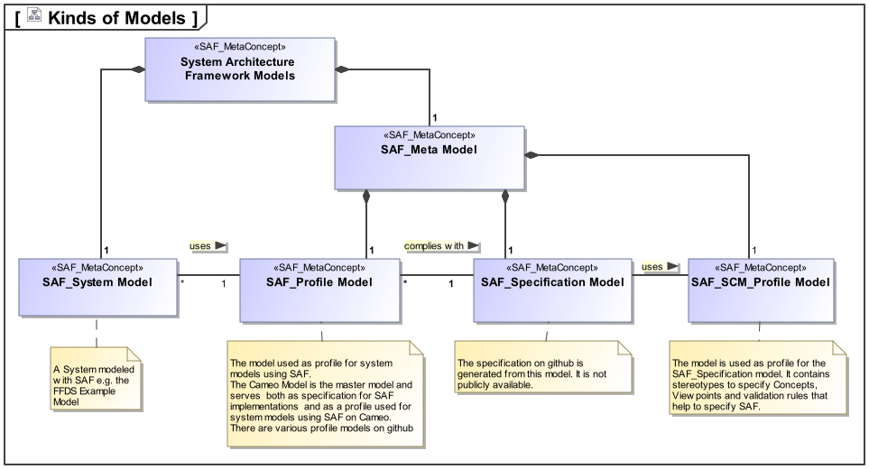
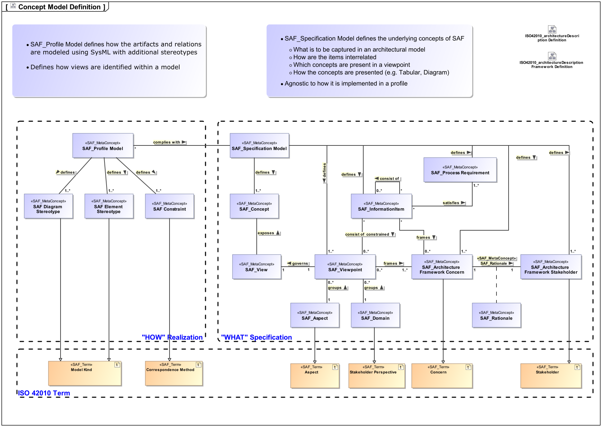

Developer Documentation
SAF Development
SAF is developed to foster Model Based Systems Engineering, and itself is developed using also a model based approach. To avoid confusion among the different kinds of models, they are explained in the next chapter.
Kinds of Models

There are several kinds of models around SAF serving a certain purpose
-
SAF System Model
This is a model dedicated to the development of one or more systems. It is a model that users of SAF create and maintain. It may be maintained in one of the Tools supported by a SAF Profile Model. The SAF example model SAF_FFDS.mdzip is a System Model.
-
SAF_Profile Model
This is a model needed to create a SAF System Model. It is tool specific and (hopefully) compliant to the SAF Specification. There are currently several contributed models:
The Repositories usually also contain an example System Model
-
SAF_Specification Model
The specification model contains the definitions serving as foundation for SAF development. See the following chapter for details.
-
SAF_SCM_Profile Model
The SAF SCM Profile is used by the SAF_Specification model. It contains Stereotypes used to specify concepts, viewpoints, framework concerns and stakeholders. It is used to specify or extend SAF.
Specification Model
The conceptual model is the foundation of SAF development.
It governs, which items SAF consist of and how these items are related.
It follows the concepts of ISO 42010. SAF extends ISO 42010 in a way that SAF is able to express a rationale for a Stakeholders Concern.

Within the conceptual model the following elements can be recognized (many of them are specializations of ISO 42010 Concepts):
- SAF Architecture Framework Stakeholders
are classes of users having an interest on the information that is maintained in a SAF System Model.
- SAF Architecture Framework Concerns
sketch out the information need of SAF Architecture Framework Stakeholders. The SAF Frameworks Viewpoints shall be designed in a way to frame these concerns, and in the end the information need should be adressed by a SAF System Model using the appropriate SAF Viewpoints.
- SAF Rationale
expains why a SAF Architectur Framework Stakeholder has abovementionend information need resulting in a SAF Architecture Framework Concern. This is currently not covered by ISO 42010.
- SAF Concepts
are the conceptual definition of items and their relationships forming an information network to be kept in a SAF System Model, in order to give answers to the SAF Architecture Framework Stakeholders Concerns.
- SAF Viewpoints
select a set of SAF Concepts in order to adress the information need expressed by a certain set of abovementioned Stakeholers Concerns.
In SAF the size of Viewpoints should be optimized to support tailoring by selection of viewpoints appropriate to the engineering problem at hand. This means that SAF Viewpoints should adress only a small number of well defined Concerns.
- SAF Information Items
are like SAF Viewpoints but at a larger scale. They can group SAF Viewpoints while constraining them further. They also can be nested.
This allows to specify Information Items like e.g. an ISO 29148 SyRS by breaking it down into smaller Information Items and finally into Viewpoints.
This allows to define which concerns are to be adressed e.g. by a SyRS document and which viewpoints are needed for it.
They also could be used to plan work items in order to plan a MBSE effort.
The goal is, to precisely define the needed model work for certain points in an engieering project.
Details are documented in the metamodeling guide.
Development Documentation Index
The Development Documentation is separated from the User Documentation.
It consists of